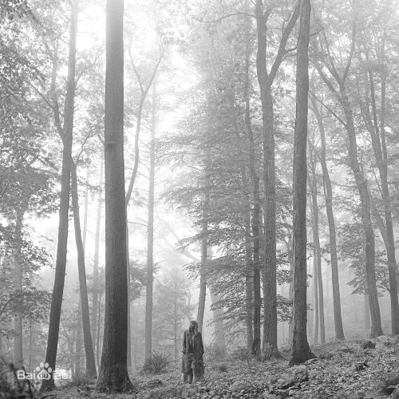
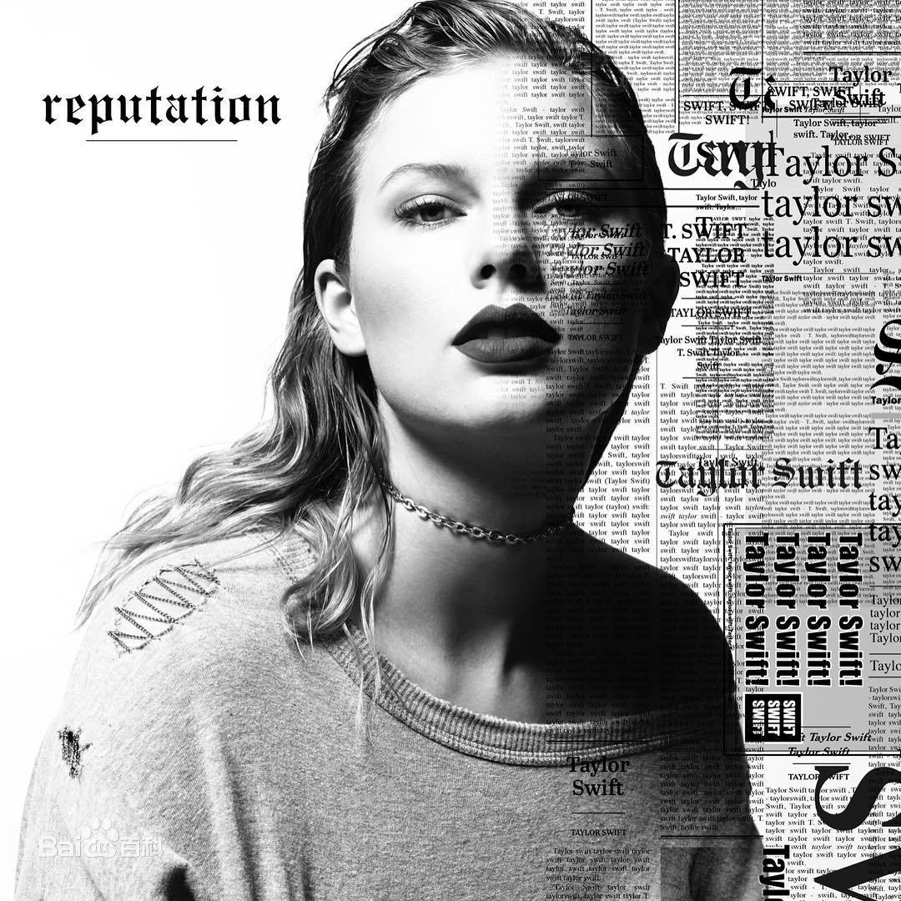
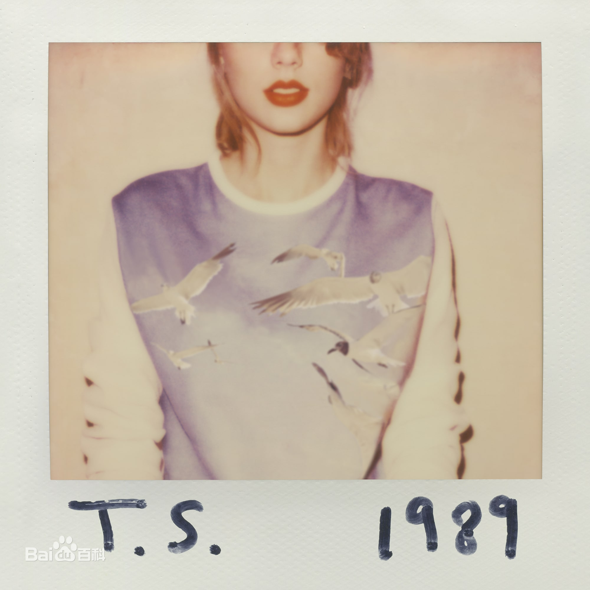
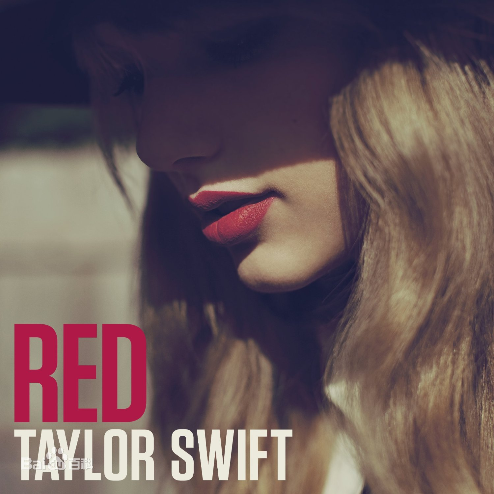

Taylor Swift
泰勒·斯威夫特（Taylor Swift），1989年12月13日出生于美国宾夕法尼亚州，美国女歌手、词曲作者、音乐制作人、演员。
重要事件
- 2006年，发行个人首张音乐专辑《Taylor Swift》，该专辑获得美国唱片业协会认证5倍白金唱片销量。
- 2008年，发行音乐专辑《Fearless》，该专辑在美国公告牌专辑榜上获11周冠军，认证7倍白金唱片销量，并获得第52届格莱美奖年度专辑奖。
- 2010年，发行音乐专辑《Speak Now》，单曲《Mean》获2座格莱美奖。同年，获创作人名人堂“哈尔·大卫星光大奖”。
- 2011年，凭借三张实体专辑销量，获得中国区“五白金唱片”销量认证。
- 2012年，开始向流行乐歌手转型，并发行音乐专辑《Red》，该专辑实体版本获得中国区“双白金唱片”销量认证。
- 2013年，获得第47届乡村音乐协会奖巅峰奖。
- 2014年，发行音乐专辑《1989》，该专辑获得第58届格莱美奖年度专辑奖，国际唱片业协会（IFPI）宣布该专辑为“年度全球唱片销量冠军”。
- 2015年，获第50届乡村音乐学院奖50周年里程碑奖。
- 2017年，发行音乐专辑《reputation》，凭借美国首周123.8万张销量，成为拥有四张首周百万销量专辑的歌手。
- 2019年，发行音乐专辑《Lover》；同年，国际唱片业协会（IFPI）宣布该专辑为“年度全球唱片销量冠军”。
- 2020年，发行音乐专辑《folklore》《evermore》。
主要成就
- 2021-1-23 第2届腾讯音乐娱乐盛典：年度最佳海外歌手奖 （获奖）
- 2020-11-25 第63届格莱美奖：年度专辑奖、年度歌曲奖、最佳流行歌手奖、最佳流行对唱/组合奖、最佳流行演唱专辑奖、最佳影视创作歌曲奖 （提名）
- 2020-11-22 2020全美音乐奖：年度最佳艺人奖、最受欢迎Pop/Rock女歌手奖、最受欢迎音乐录影带奖《Cardigan》 （获奖）
- 2020-11-22 第48届全美音乐奖：年度艺人、最受欢迎音乐录影带、最受欢迎流行/摇滚女艺人 （获奖）
- 2020-8 第37届MTV音乐录影带大奖：最佳导演奖《The Man》 （获奖）
- 2020-2-12 2020年度NME颁奖典礼：世界最佳Solo艺人奖 （获奖）
- 2016 NME音乐奖：最佳国际歌手奖 （获奖）
- 2015-4-11 第3届音悦V榜年度盛典：欧美最佳女歌手奖 《Blank Space》 （获奖）
- 2015-4-11 第3届音悦V榜年度盛典：欧美年度最佳MV奖 《Blank Space》 （获奖）
- 2015-4-11 第3届音悦V榜年度盛典：欧美最具人气歌手奖 （获奖）
- 2015 Capital Love音乐奖：最佳歌曲 《Blank Space》 （获奖）
- 2015 法国NRJ音乐奖：最佳国际女歌手 （获奖）
- 2015 法国NRJ音乐奖：年度MV 《Bad Blood》 （获奖）
- 2014-4-15 第2届音悦V榜年度盛典：年度MV奖 《22》 （获奖）
- 2014 多利安奖：年度录影带奖 《Blank Space》 （提名）
- 2013-4-13 第1届音悦V榜年度盛典：欧美最具人气歌手奖 （获奖）
- 2011 第48届朱诺奖：年度国际专辑奖 《Speak Now》 （提名）
- 2010-6 第48届创作人名人堂奖：哈尔·大卫星光大奖 （获奖）
- 2010 日本录影带奖：最佳新人录影带 （提名）
- 2010 菲律宾MYX音乐奖：最受欢迎国际音乐录影带录影带奖 《Love Story》 （获奖）
主要专辑




生平
童年时期，泰勒·斯威夫特住在美国宾夕法尼亚州怀俄明辛的一个11 英亩的圣诞树农场。10 岁时，她写了一篇长达三页的诗歌《我壁橱里的怪物》，获得了全美诗歌大赛奖项。同年，开始在美国费城以及周边地区演出。11岁时，在NBA球队费城76人比赛前，登台演唱美国国歌。2001年，在电视上看到了乡村歌手菲丝·希尔的节目后，使她产生了成为一名乡村歌手、去美国纳什维尔的念头。在学完和弦后，她创作了第一首歌曲《Lucky You》。同年，跟随家人开车去了一趟纳什维尔，并前往拥有多家唱片公司的音乐街，将原创的音乐小样送去每一家唱片公司的前台。
泰勒·斯威夫特父母为了帮助女儿追逐音乐梦想，搬家到了纳什维尔。2003年，在向美国RCA唱片公司展示原创歌曲后，泰勒·斯威夫特得到了一份合约，开始了音乐创作生涯。但是，15岁的泰勒·斯威夫特无法接受等待三年再发行唱片的规划，于是离开了该公司。随后，泰勒·斯威夫特在纳什维尔作曲家集合地蓝鸟咖啡馆演出时，吸引了斯科特·波切塔的注意，并成为他旗下大机器唱片公司的第一位签约歌手。
>